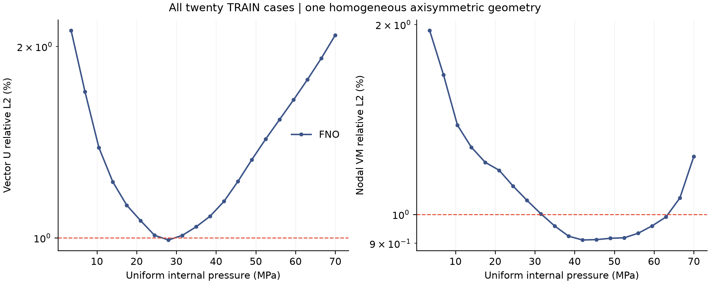
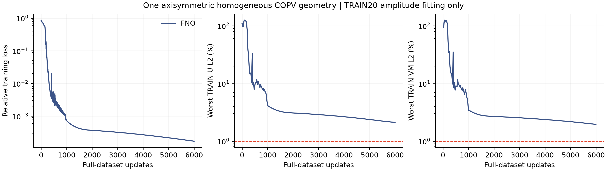
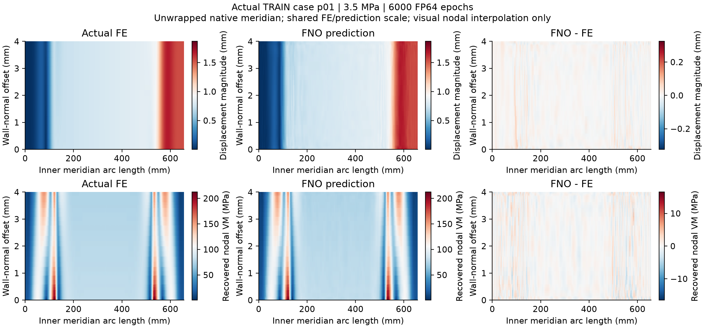
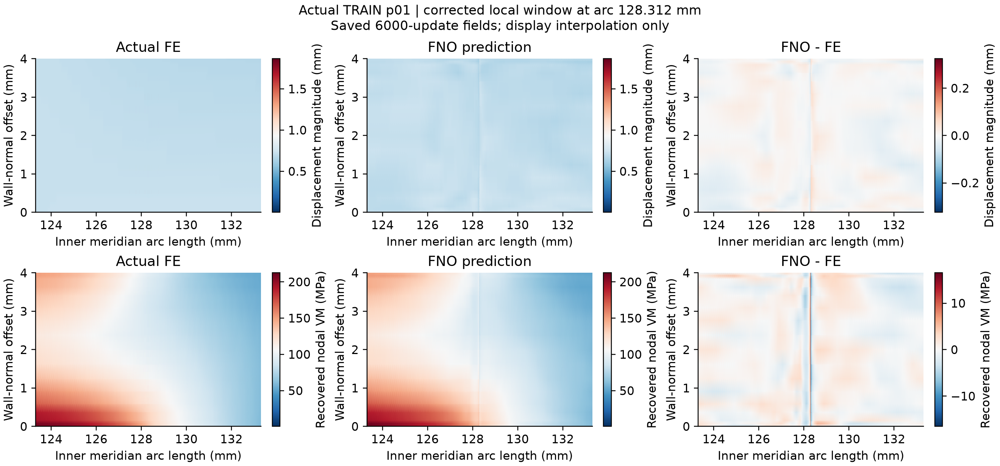

FNO 路 6000 full-data epochs 路 max TRAIN U L2 2.1202% 路 max recovered VM L2 1.9576% 路 all-case 1% target: False

One homogeneous equivalent-wall geometry, pressure amplitudes only. No generalization or rated-pressure claim. VM is recovered nodal stress, not raw GP or ply stress. No prediction clipping.
All-case CSV 路 Figure PDF 路 Independent verification

Actual p01, 3.5 MPa. The meridian is unwrapped using physical arc length and wall-normal distance. Colours interpolate native nodal display values; labels and metrics are unchanged.


Display correction: the local window now uses the axial station from the bijective inverse node order (arc 128.312 mm). The earlier plot used the thickness index as the axial index. Original figures and delivery records are retained. Predictions, training state and all error metrics are unchanged.